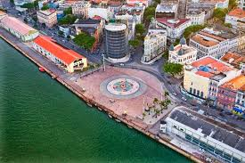

O que é o Marco Zero?
O Marco Zero é o ponto de referência da cidade de Recife, localizado no Bairro do Recife. É um local emblemático que marca a fundação da cidade e é conhecido por sua vista deslumbrante do Rio Capibaribe e do Centro Histórico.
Atrações Próximas
O Marco Zero está cercado por várias atrações turísticas, incluindo:
- Teatro de Santa Isabel
- Praça do Arsenal
- Centro Cultural Judaico
- Mercado de São José
História
O Marco Zero foi inaugurado em 1930 e se tornou um dos pontos turísticos mais visitados da cidade, recebendo milhares de visitantes todos os anos. Sua arquitetura e sua localização fazem dele um lugar perfeito para passeios e eventos culturais.